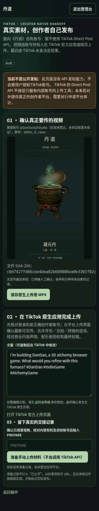
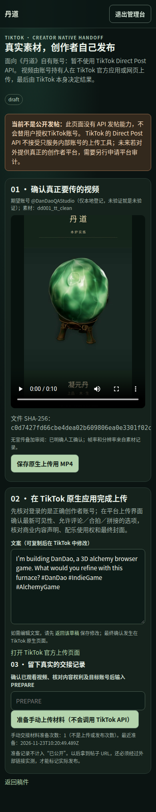

DanDao · The Way of Alchemy · W164
真实炼丹视频的海外发布交接
这一版把真实游戏录制从带营销叠字的 DD001-A/B 改为更适合创作者自行上传的无额外叠字版本，并实测了手机端本地交接页。下方视频来自真实 WebGL 游戏录制，不是 AI 模拟出来的玩法。
真实游戏视频22/22 测试通过非 TikTok 已发布视频
01 · 不附加营销叠字的竖屏素材
原 W143 实录为 540×960、约 22.7 有效录制帧/秒；本文件输出 1080×1920 属于放大处理，不是原生 1080p/30fps。实际画面和声音来自原游戏，没有叠加品牌水印、网址或 CTA。
下载这一条真实 MP402 · 自建 TikTok 原生交接管理台


真机显示素材、帖子草稿、可下载 MP4 和去 TikTok 原生上传页的路径。实际管理页带登录，公网此处仅为静态 QA 截图。
03 · 交接确认回执


PREPARE 只记录交接准备，游戏/社交发布系统没有向 TikTok API 上传内容，真实公开帖子数不能因其增加。
政策说明：TikTok Direct Post API 的官方指南不接受仅用于开发者或团队自己账号的内部上传工具，因此《丹道》自有 TikTok 账号现阶段应由账号持有人在 TikTok 官方网站或 App 原生上传。这里仅演示合规的本地素材准备，不代表平台认证或自动发帖已可用。视频内容和配乐仍需最终版权及发布审核。